Cap. 10 Parcela subdividida
No delineamento em parcelas subdivididas existem dois tipos de tratamento: o principal e o secundário. As parcelas são subdivididas no espaço, ou no tempo. Depois que os tratamentos principais (parcelas) são sorteados, sorteia-se o tratamento secundário (subparcelas) dentro das parcelas.
Indica-se o uso de parcelas subdivididas quando:
- A parcela é uma “unidade” que pode receber vários tratamentos secundários. No setor florestal esta unidade pode ser um vaso, ou mesmo uma árvore.
- Não é possível instalar o experimento no esquema fatorial.
- O tratamento principal exige parcelas custosas, seja do ponto de vista financeiro ou do esforço.
- A busca pela precisão está no tratamento secundário.
- Deseja-se que a variação entre subparcelas seja menor que entre as parcelas.
O modelo estatístico do delineamento em parcela subdividida é:
\[Y = \bar{Y} + BLOCO + TRAT_A + Erro_{Parcela} + TRAT_B + (TRAT_A * TRAT_B) + Erro_{Subparcela}\]
10.1 O caso balanceado
Como exemplo de um desenho de parcela subdividida balanceado, tem-se um experimento de regeneração natural do sub bosque de três formações florestais. Nas parcelas de cada uma das área naturais estudadas, implantaram-se subparcelas correspondendo a três alturas de desrama. O efeito dos tratamentos foi medido através do número de indivíduos regenerantes.
- Fator na parcela: Floresta A, B e C
- Fator nas subparcelas: Desrama a 2, 5 e 7 metros
- 3 repetições
- Variável de interesse: número de indivíduos regenerantes
| floresta | rep | desrama | indiv |
|---|---|---|---|
| A | 1 | 2 | 48 |
| A | 2 | 2 | 47 |
| A | 3 | 2 | 47 |
| A | 1 | 5 | 79 |
| A | 2 | 5 | 62 |
| A | 3 | 5 | 65 |
| A | 1 | 7 | 101 |
| A | 2 | 7 | 105 |
| A | 3 | 7 | 112 |
| B | 1 | 2 | 90 |
| B | 2 | 2 | 97 |
| B | 3 | 2 | 114 |
| B | 1 | 5 | 123 |
| B | 2 | 5 | 145 |
| B | 3 | 5 | 122 |
| B | 1 | 7 | 172 |
| B | 2 | 7 | 157 |
| B | 3 | 7 | 177 |
| C | 1 | 2 | 100 |
| C | 2 | 2 | 101 |
| C | 3 | 2 | 103 |
| C | 1 | 5 | 130 |
| C | 2 | 5 | 133 |
| C | 3 | 5 | 140 |
| C | 1 | 7 | 144 |
| C | 2 | 7 | 147 |
| C | 3 | 7 | 148 |
O primeiro passo é importar o arquivo contendo os resultados do experimento para dentro do R. Esta tarefa pode ser realizada através do seguinte comando:
Você já sabe! Antes de ir para análise estatística explore graficamente os dados.
- Considerando apenas tratamento principal:
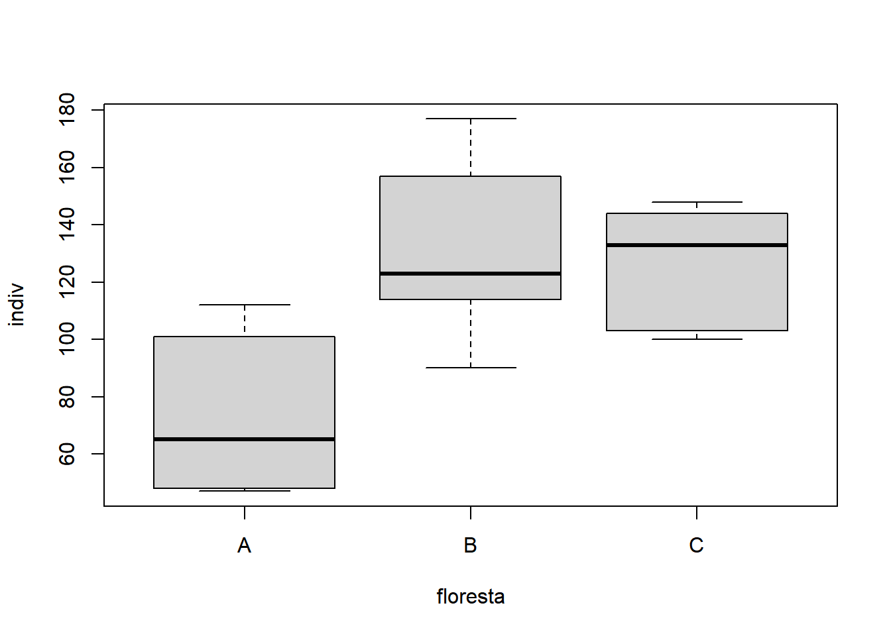
- Considerando apenas tratamento secundário:
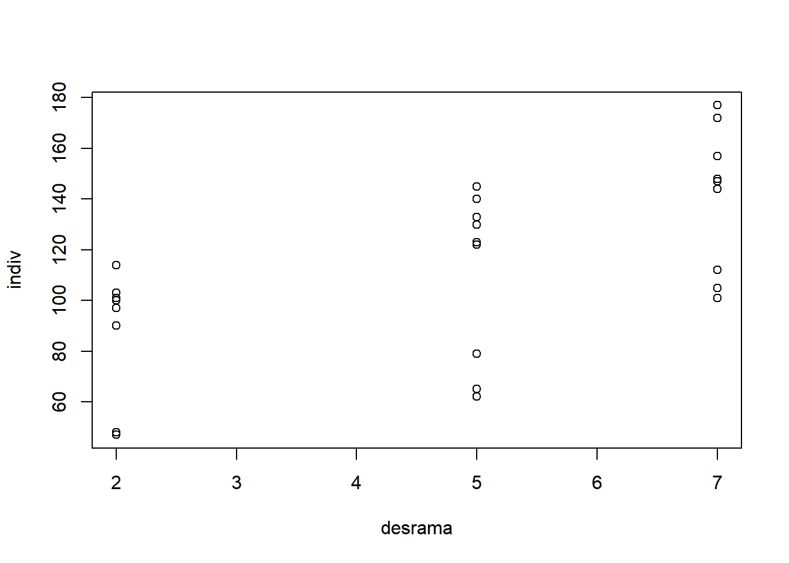
- Interação dos tratamentos:
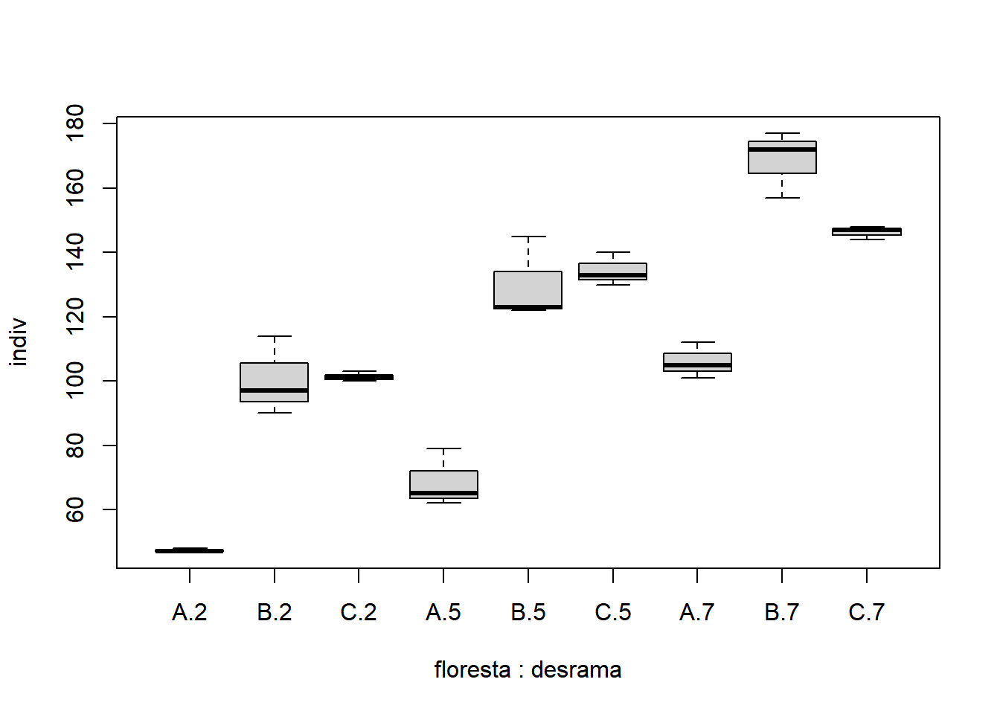
- Fixando desrana até 2 metros:
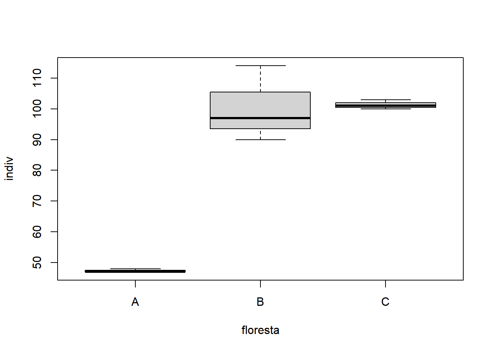
- Fixando desrana até 5 metros:
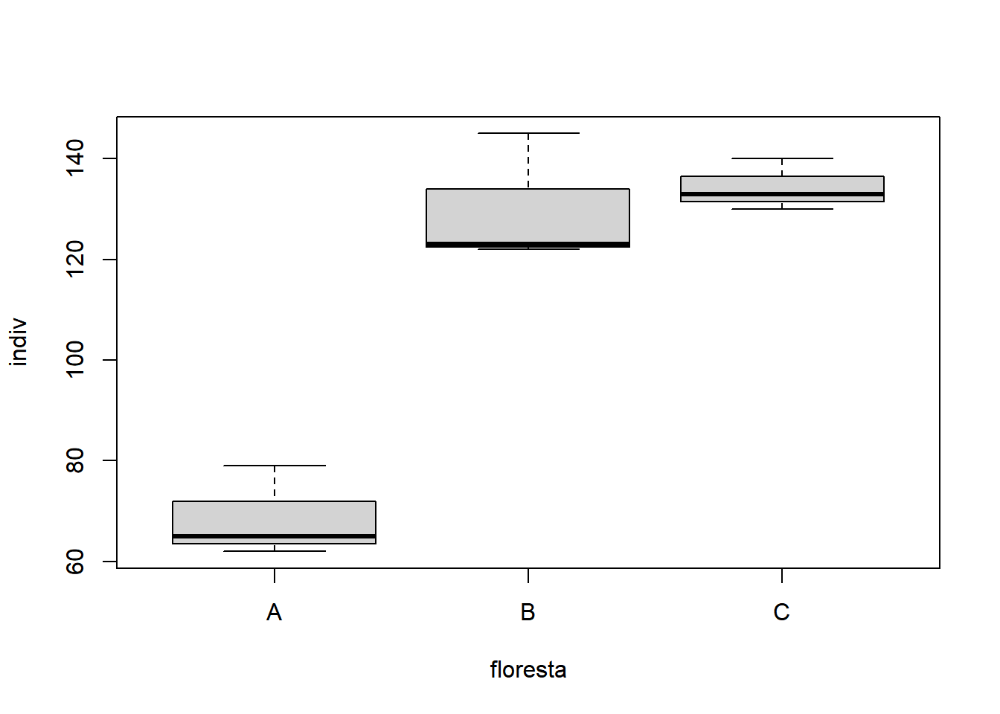
- Fixando desrana até 7 metros:
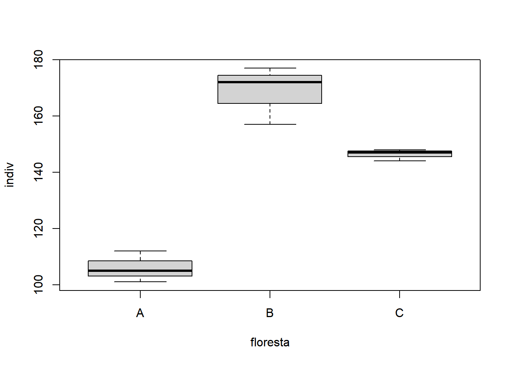
- Fixando floresta igual a A:
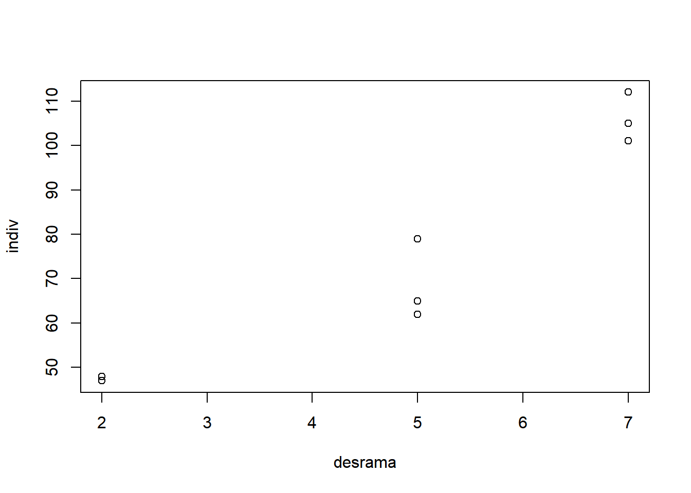
- Fixando floresta igual a B:
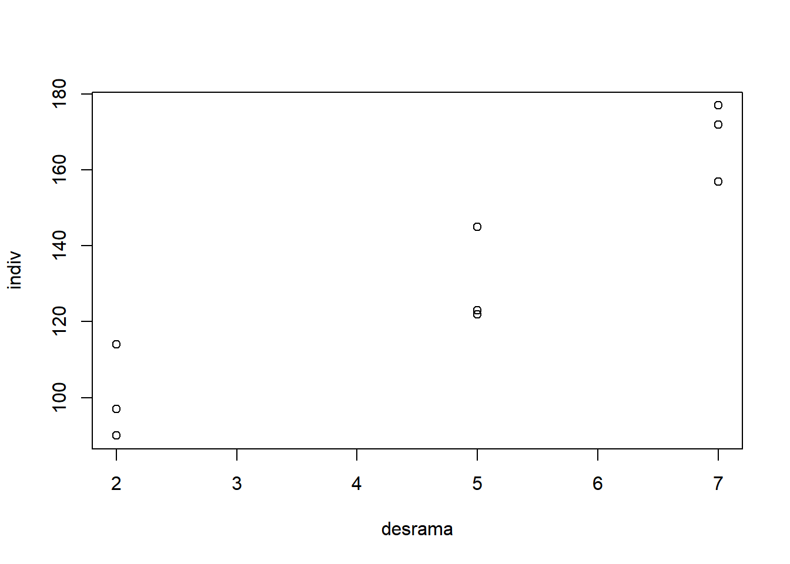
- Fixando floresta igual a C:
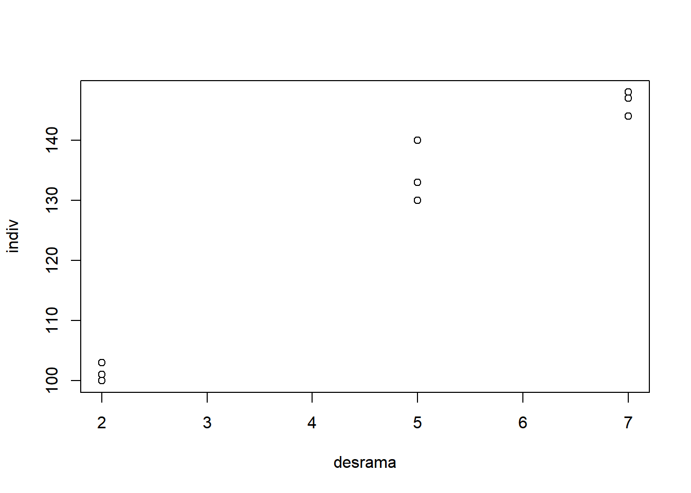
Analisando os gráficos acima, os fatores parecem significativos, assim como a interação. Quando o interesse é verificar a questão das pressuposições considerando os tratamentos (Parcela e Subparcela juntos), além das colunas referentes a parcela e subparcela, teria que ser acrescentado uma coluna para tratamentos. Ou seja, é como se fosse uma análise preliminar como DIC ou DBC.
O pacote ExpDes.pt não inclui as análises de pressuposições para o delineamento de parcelas subdivididas. Existem várias maneiras de contornar esta questão, uma delas é combinar as qualidades de diferentes pacotes. Aqui por exemplo, utiliza-se os testes estatísticos das pressuposições de um pacote e a ANOVA e desdobramentos do outro.

Como já foi visto, o teste de normalidade e de homogeneidade podem ser obtidos na posição 10 da função ea2() do pacote easyanova.
## $`Residual analysis`
## $`Residual analysis`$values
## values
## p.value Shapiro-Wilk test 0.4583
## p.value Bartlett test (plot) 0.0036
## p.value Bartlett test (split.plot) 0.5945
## p.value Bartlett test (plot*split.plot) 0.0264
## AIC 171.9126
## BIC 182.5971
## first value most discrepant 14.0000
## second value most discrepant 12.0000
## third value most discrepant 17.0000
## Mean Square of Error a 35.6667
## Mean Square of Error b 64.0009
## Coefficient of Variation a 5.3589
## Coefficient of Variation b 7.1785
##
## $`Residual analysis`$residuals
## 1 2 3 4
## 0.6605916 -0.3252332 -0.3353584 10.3272582
## 5 6 7 8
## -6.6585666 -3.6686917 -5.0060751 -0.9918999
## 9 10 11 12
## 5.9979750 -10.3191581 -3.3333333 13.6524915
## 13 14 15 16
## -6.9858248 15.0000000 -8.0141752 3.3475085
## 17 18 19 20
## -11.6666667 8.3191581 -1.3252332 -0.3323208
## 21 22 23 24
## 1.6575540 -4.3252332 -1.3323208 5.6575540
## 25 26 27
## -2.3252332 0.6676792 1.6575540
## attr(,"label")
## [1] "Residuals"
##
## $`Residual analysis`$`standardized residuals`
## 1 2 3 4
## 0.09926874 -0.04887361 -0.05039514 1.55190283
## 5 6 7 8
## -1.00059939 -0.55130344 -0.75227538 -0.14905527
## 9 10 11 12
## 0.90133065 -1.55068561 -0.50090831 2.05159391
## 13 14 15 16
## -1.04977730 2.25408738 -1.20431008 0.50303845
## 17 18 19 20
## -1.75317907 1.25014062 -0.19914610 -0.04993868
## 21 22 23 24
## 0.24908478 -0.64996357 -0.20021117 0.85017474
## 25 26 27
## -0.34941859 0.10033381 0.24908478Uma vez confirmadas as pressuposições, retorna-se ao pacote ExpDes.pt. A sintaxe da função para análise de parcela subdividida no pacote é:
psub2.dic(fator1, fator2, repet, resp, quali = c(TRUE, TRUE),
mcomp = "tukey", fac.names = c("F1", "F2"),
sigT = 0.05, sigF = 0.05)No exemplo tem-se o fator principal (fator 1) como qualitativo e o fator secundário (fator 2) como quantitativo. Assim informando os parâmetros obrigatórios juntamente com os parâmetros quali e fac.names (nomes dos fatores) tem-se:
require(ExpDes.pt)
psub2.dic(sub$floresta, sub$desrama, sub$rep, sub$indiv,
quali = c(TRUE, FALSE),
fac.names = c("Floresta", "Desrama"))## ------------------------------------------------------------------------
## Legenda:
## FATOR 1 (parcela): Floresta
## FATOR 2 (subparcela): Desrama
## ------------------------------------------------------------------------
##
## ------------------------------------------------------------------------
## $`Quadro da analise de variancia`
## GL SQ QM Fc Pr(>Fc)
## Floresta 2 19073 9536.3 267.374 1e-06 ***
## Erro a 6 214 35.7
## Desrama 2 14795 7397.3 94.568 < 2e-16 ***
## Floresta*Desrama 4 799 199.7 2.553 0.09349 .
## Erro b 12 939 78.2
## Total 26 35819
## ---
## Signif. codes:
## 0 '***' 0.001 '**' 0.01 '*' 0.05 '.' 0.1 ' ' 1
##
## ------------------------------------------------------------------------
## CV 1 = 5.358865 %
## CV 2 = 7.936091 %
##
## ------------------------------------------------------------------------
## #Teste de normalidade dos residuos (Shapiro-Wilk)
## valor-p: 0.5769146
## De acordo com o teste de Shapiro-Wilk a 5% de significancia, os residuos podem ser considerados normais.
## ------------------------------------------------------------------------
##
## Interacao nao significativa: analisando os efeitos simples
## ------------------------------------------------------------------------
## Floresta
## Teste de Tukey
## ------------------------------------------------------------------------
## Grupos Tratamentos Medias
## a B 133
## a C 127.3333
## b A 74
## ------------------------------------------------------------------------
##
## Desrama
## Ajuste de modelos polinomiais de regressao
## ------------------------------------------------------------------------
##
## Modelo Linear
## =========================================
## Estimativa Erro.padrao tc valor.p
## -----------------------------------------
## b0 58.7193 4.2238 13.9021 0
## b1 11.2982 0.8284 13.6395 0
## -----------------------------------------
##
## R2 do modelo linear
## --------
## 0.983607
## --------
##
## Analise de variancia do modelo linear
## ==============================================================
## GL SQ QM Fc valor.p
## --------------------------------------------------------------
## Efeito linear 1 14,552.1400 14,552.1400 186.04 0
## Desvios de Regressao 1 242.5263 242.5263 3.1 0.10371
## Residuos 12 938.6667 78.2222
## --------------------------------------------------------------
## ------------------------------------------------------------------------
##
## Modelo quadratico
## ========================================
## Estimativa Erro.padrao tc valor.p
## ----------------------------------------
## b0 75 10.1652 7.3781 0.00001
## b1 1.8667 5.4200 0.3444 0.7365
## b2 1.0667 0.6058 1.7608 0.1037
## ----------------------------------------
##
## R2 do modelo quadratico
## -
## 1
## -
##
## Analise de variancia do modelo quadratico
## ==============================================================
## GL SQ QM Fc valor.p
## --------------------------------------------------------------
## Efeito linear 1 14,552.1400 14,552.1400 186.04 0
## Efeito quadratico 1 242.5263 242.5263 3.1 0.10371
## Desvios de Regressao 0 0 0 0 1
## Residuos 12 938.6667 78.2222
## --------------------------------------------------------------
## ------------------------------------------------------------------------Como esperado, foi observado a significância dos fatores: floresta e desrama. No entanto, a interação não foi significativa a 5%. Desta forma, não é necessário analisar a interação entre os fatores.
10.2 O caso desbalanceado
Neste exemplo desbalanceado será analisado um experimento em que três alturas de desrama são subdivididos em três espécies florestais. O efeito dos tratamentos foi medido através da produção de madeira em metros cúbicos.
- Fator na parcela: Espécie florestal: A, B ou C.
- Fator nas subparcelas: Desrama 2, 5 e 7 metros.
- 3 repetições.
- Observações perdidas: Espécie A, desrama 2 metros e repetição 2. Espécie C, desrama 2 metros e repetição 2. Espécie C, desrama 5 metros e repetição 1. Espécie C, desrama 7 metros e repetição 1.
- Variável de interesse: número de indivíduos regenerantes.
| especie | rep | desrama | volume |
|---|---|---|---|
| A | 1 | 2 | 48 |
| A | 3 | 2 | 47 |
| A | 1 | 5 | 79 |
| A | 2 | 5 | 62 |
| A | 3 | 5 | 65 |
| A | 1 | 7 | 131 |
| A | 2 | 7 | 65 |
| A | 3 | 7 | 112 |
| B | 1 | 2 | 80 |
| B | 2 | 2 | 97 |
| B | 3 | 2 | 114 |
| B | 1 | 5 | 123 |
| B | 2 | 5 | 145 |
| B | 3 | 5 | 122 |
| B | 1 | 7 | 172 |
| B | 2 | 7 | 157 |
| B | 3 | 7 | 177 |
| C | 1 | 2 | 100 |
| C | 3 | 2 | 103 |
| C | 2 | 5 | 133 |
| C | 3 | 5 | 104 |
| C | 2 | 7 | 147 |
| C | 3 | 7 | 119 |
O primeiro passo é importar o arquivo contendo os resultados do experimento para dentro do R. Esta tarefa pode ser realizada através do seguinte comando:
Os dados devem ser explorados graficamente antes de seguir com a análise de variância do experimento.
- Considerando apenas tratamento principal:
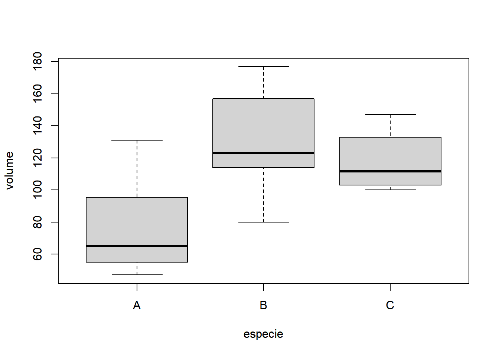
- Considerando apenas tratamento secundário:
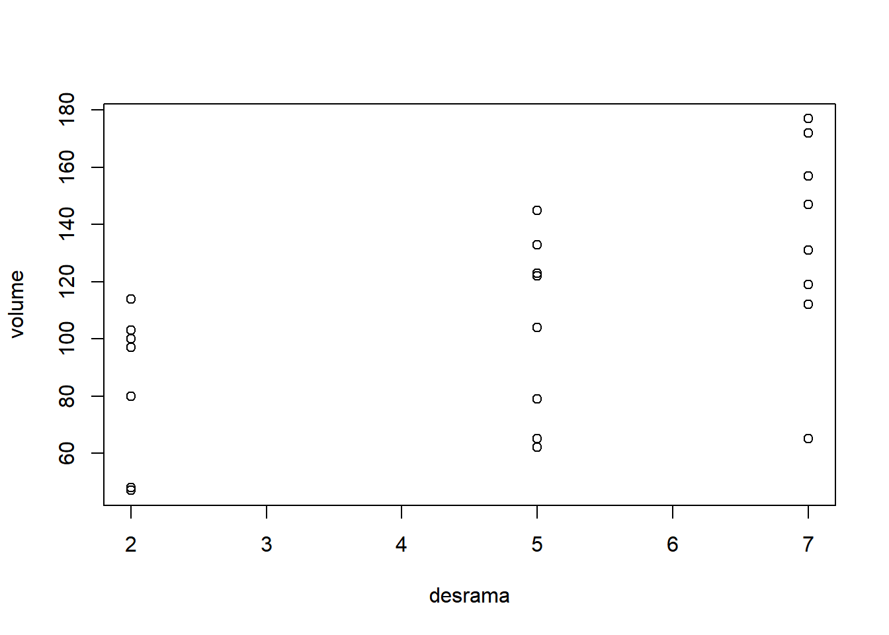
- Interação dos tratamentos:
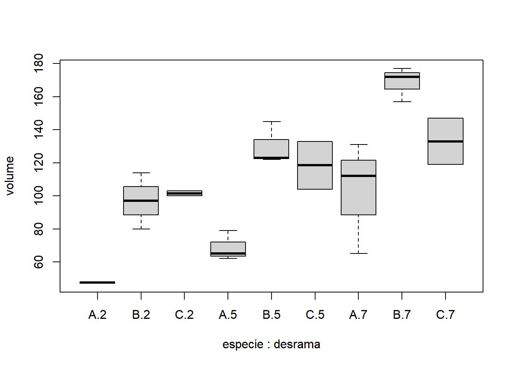
- Fixando desrana até 2 metros:
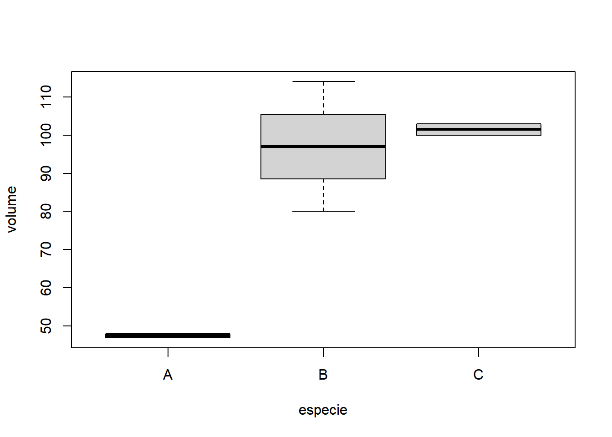
- Fixando desrama até 5 metros:
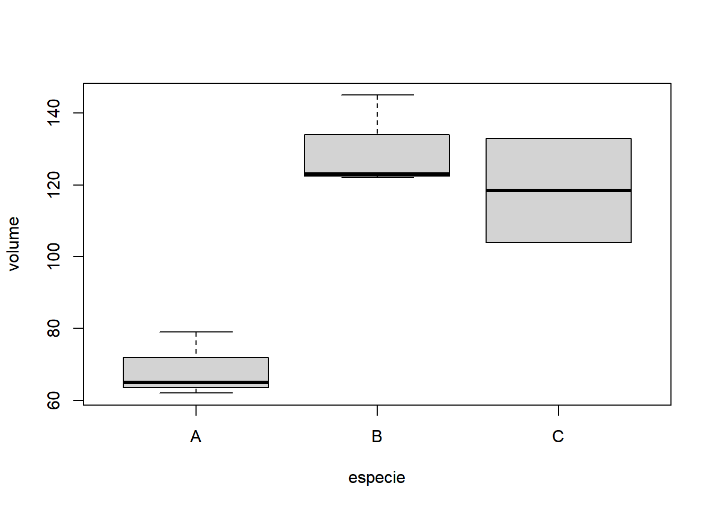
- Fixando desrama até 7 metros:
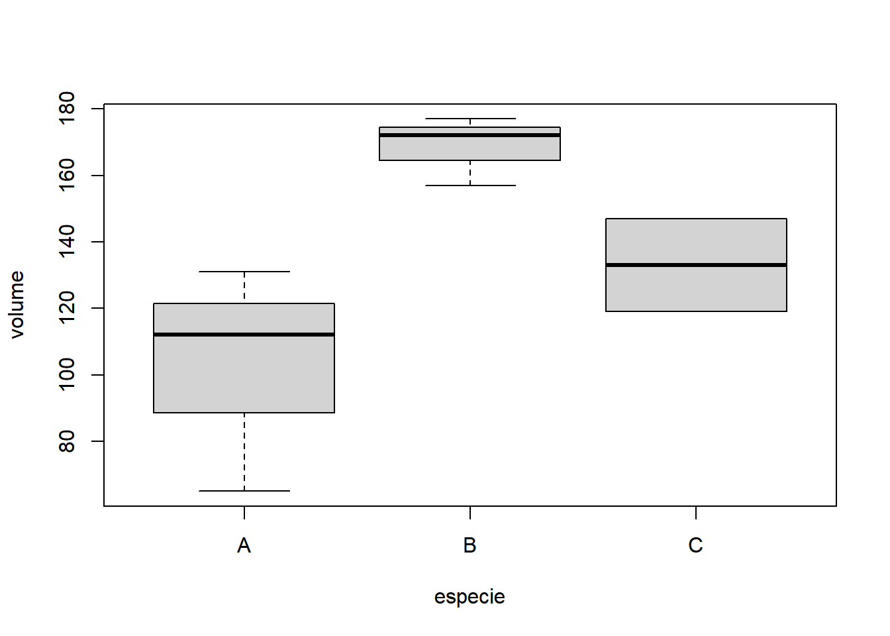
- Fixando espécie igual a A:
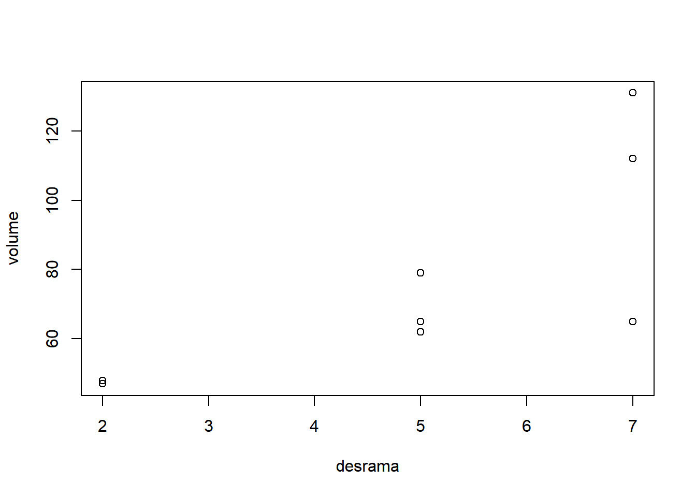
- Fixando espécie igual a B:
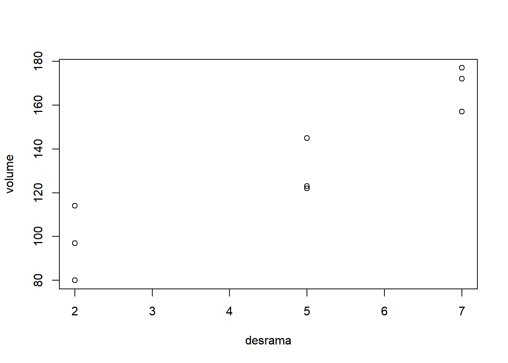
- Fixando espécie igual a C:
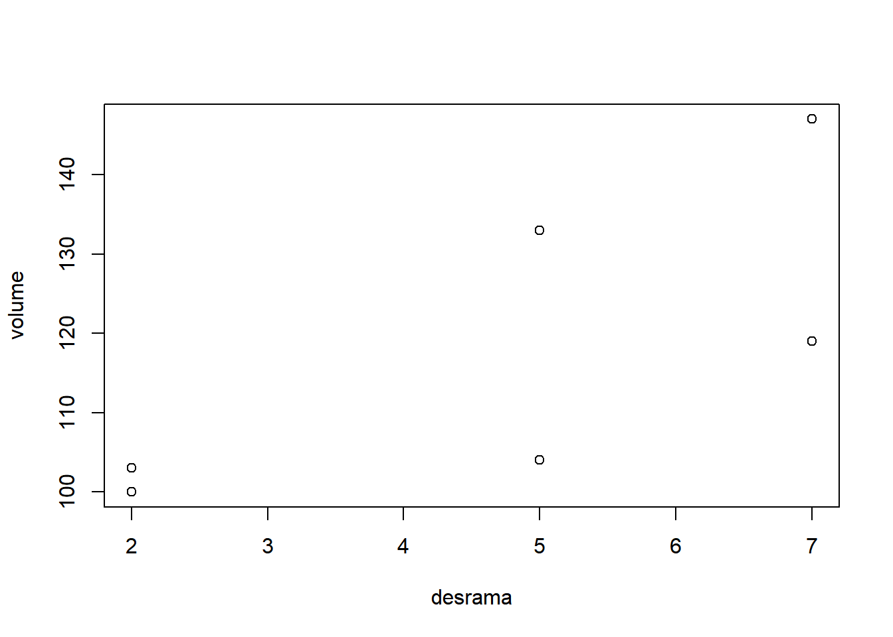
Os dados por se tratarem de experimento desbalanceados com efeito da interação relevante devem ser analisados com o pacote easyanova. A função será ea2() e possui a sintaxe básica:
Os dados devem ser apresentados na ordem:
- Fator nas parcelas
- Repetição
- Fator nas subparcelas
- Variável resposta
O parâmetro design deve ser definido como 4, resultando no seguinte comando:
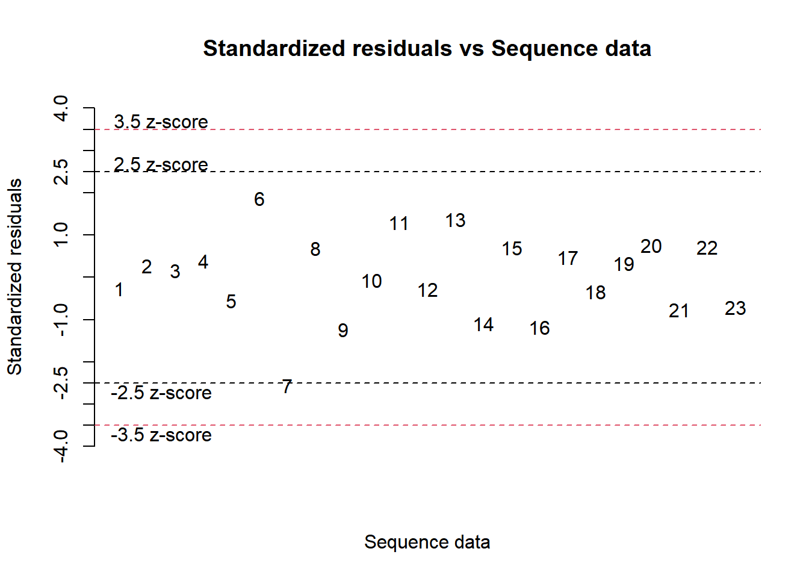
Os resultados podem ser acessados escolhendo um dos elementos da lista:
## $`Residual analysis`
## $`Residual analysis`$values
## values
## p.value Shapiro-Wilk test 0.8313
## p.value Bartlett test (plot) 0.4160
## p.value Bartlett test (split.plot) 0.2427
## p.value Bartlett test (plot*split.plot) 0.6827
## AIC 165.0415
## BIC 172.7102
## first value most discrepant 7.0000
## second value most discrepant 6.0000
## third value most discrepant 13.0000
## Mean Square of Error a 402.7662
## Mean Square of Error b 220.3501
## Coefficient of Variation a 18.4488
## Coefficient of Variation b 13.6457
##
## $`Residual analysis`$residuals
## 1 2 3 4
## -2.8241221 2.8241221 1.6212788 4.1091983
## 5 6 7 8
## -5.7304770 19.6212788 -26.8908017 7.2695230
## 9 10 11 12
## -12.9589104 -0.6517886 13.6106990 -2.9589104
## 13 14 15 16
## 14.3482114 -11.3893010 7.3744229 -12.3184553
## 17 18 19 20
## 4.9440324 -3.5066019 3.5066019 7.9988237
## 21 22 23
## -7.9988237 7.4988237 -7.4988237
## attr(,"label")
## [1] "Residuals"
##
## $`Residual analysis`$`standardized residuals`
## 1 2 3 4
## -0.26911379 0.26911379 0.15449349 0.39157015
## 5 6 7 8
## -0.54606364 1.86973386 -2.56245492 0.69272107
## 9 10 11 12
## -1.23486923 -0.06210968 1.29697891 -0.28195792
## 13 14 15 16
## 1.36725729 -1.08529938 0.70271711 -1.17383954
## 17 18 19 20
## 0.47112244 -0.33414806 0.33414806 0.76221696
## 21 22 23
## -0.76221696 0.71457139 -0.71457139O teste de normalidade apresentou valor não significativo, indicando assim que não há evidências para rejeitar a normalidade dos resíduos.
## $`Marginal anova (Type III Sum of Squares)`
## numDF denDF F-value p-value
## plot 2 6 16.07861 0.0039
## split.plot 2 8 21.60633 0.0006
## plot:split.plot 4 8 1.27547 0.3555Sendo a interação não significativa, os fatores (da parcela e da subparcela) devem ser analisados de forma independente.
- Comparação das parcelas:
## $`Adjusted means (plot)`
## plot adjusted.mean standard.error tukey snk duncan t
## 1 B 131.8889 7.6958 a a a a
## 2 C 118.3355 8.6638 a a a a
## 3 A 71.1485 8.0186 b b b b- Comparação das subdivisões:
## $`Adjusted means (split.plot)`
## split.plot adjusted.mean standard.error tukey snk duncan
## 1 7 134.5013 6.4491 a a a
## 2 5 105.4458 6.4491 b b b
## 3 2 81.4258 6.8129 c c c
## t
## 1 a
## 2 b
## 3 c